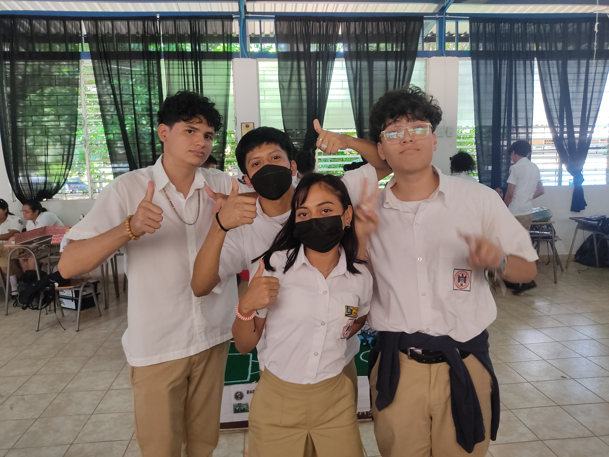
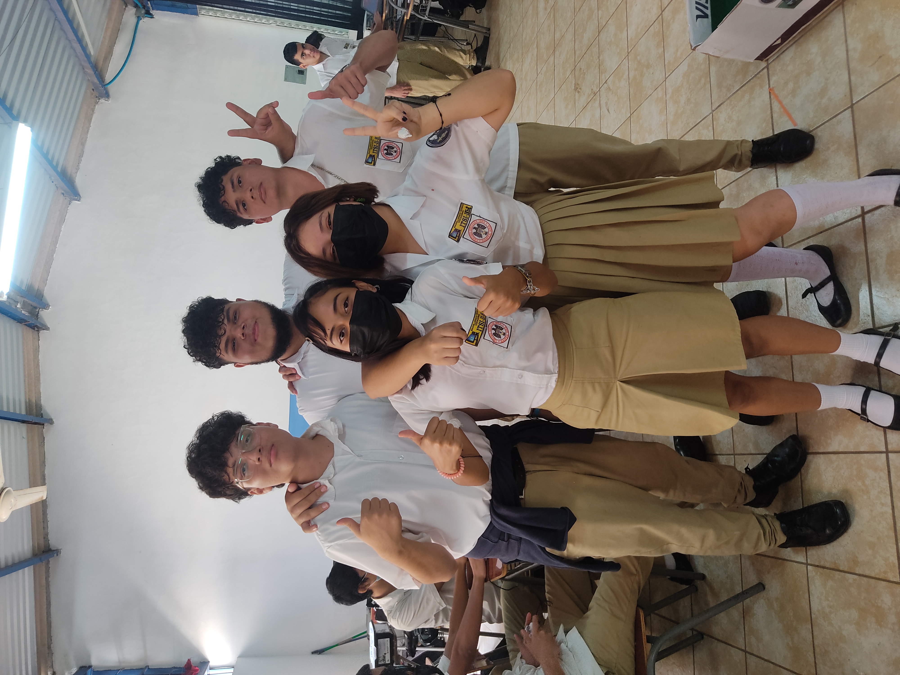
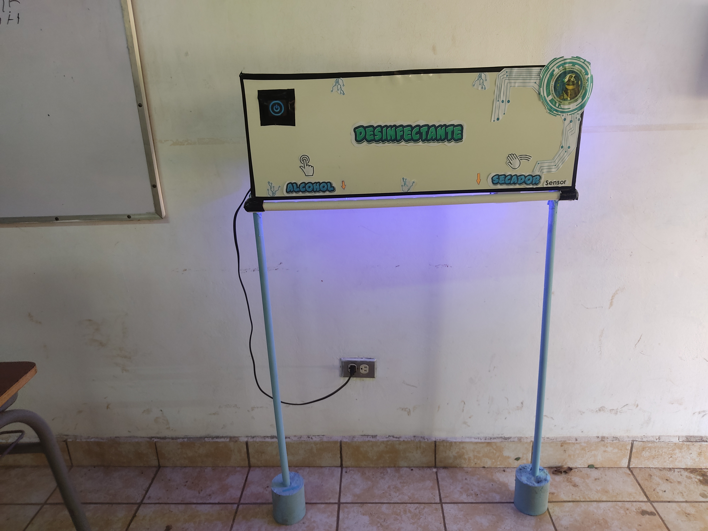
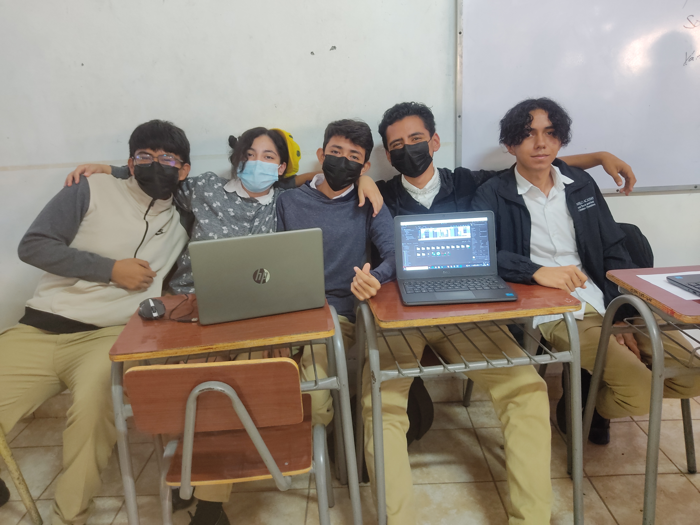
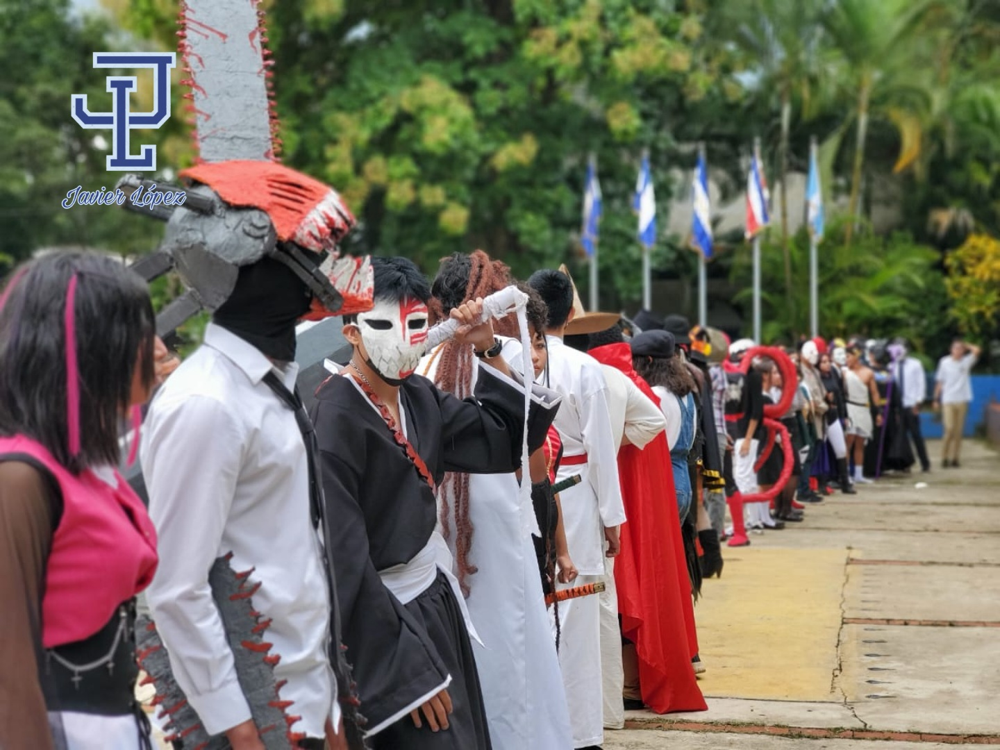
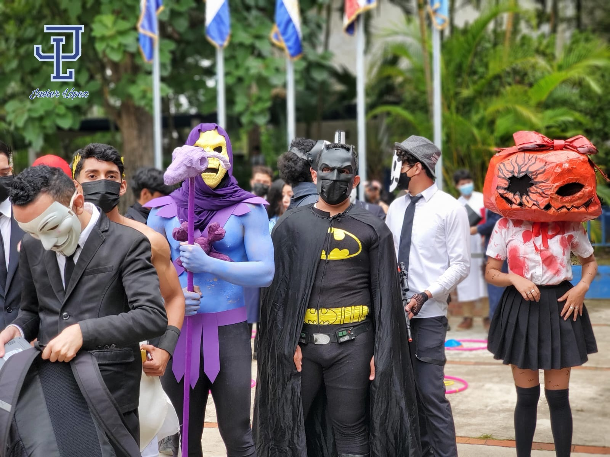

Matrícula 2024 de ITSI
El Bachillerato Técnico Vocacional en Infraestructura Tecnológica y Servicios Informáticos del CEINSA, te invita a que formes parte de nuestra familia tecnológica.
Inicio de preinscripción: del 21 de agosto/2023 hasta agotar cupos.
Formulario de preinscripción: https://forms.gle/GDurdhMRccYWSxdG6
O también puedes llegar a la oficina del bachillerato para completar ficha de preinscripción
Las materias que se dan a dicho bachillerato son las siguientes:
Modúlos de 1er Año
Instalación y Mantenimiento de Sistemas Electricos y Redes Informaticas
Instalación y Mantenimiento de Equipo Ofimático
Proyecto Tecnológico
Programación
Idioma Extranjero
Diseño Multimedia
Informatica
Emprendedurismo Colaborativo
Maestros
Prof. Roberto Arturo Arias
Lic. Oscar Orantes
Ing. Marta Maria Labor
Prof. José Nicolas Trejo
Prof. Wilson Hernandez Rivas
Feria de Proyecto
El dia 13 de Octubre del presente año se realizo la Feria de Pryecto, donde precentaron
proyecto de roboticas, desaroolo web, diseño de videojugeo etc.




Cosplay 31 de Octubre
El 31 de Octubre se realizira el evento de cosplay con tematica de Haloween, el evento empezara a las 2:00 p.m.
la entrada tendra un costo de 50 centavos y la inscripcion un costo de 1 dolar.
Feria de Logros 2022
En este año se reanudó la Feria de Logros, donde los alumnos de ITSI e Industrial precentaron sus projectos, donde
muestran sus habilidades en distintas areas.
El mismo día se reanudó el evento "Cosplay" de manera presencial, como parte de la "Feria de Logros 2022" permitiendo
a los estudiantes concursar entre si y mostrar sus cosplays al publico en general, el evento fué gracias al patrocinio
de la Fundacion Hellen Keller El Salvador que esta proporcinando los trofeos para todas las caegorias.

